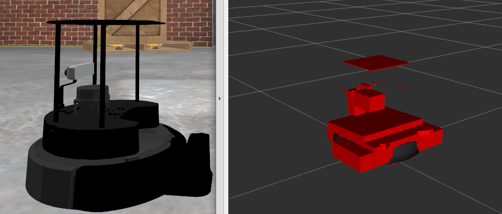

Humble Hawksbill (humble)
Table des matières
Humble Hawksbill est la huitième version de ROS 2. Ce qui suit présente les points saillants des modifications et fonctionnalités importantes apportées à Humble Hawksbill depuis la dernière version. Pour une liste de tous les changements depuis Galactic, consultez le long form changelog.
Plates-formes prises en charge
Humble Hawksbill est principalement pris en charge sur les plates-formes suivantes :
Plateformes de niveau 1 :
Ubuntu 22.04 (Jammy) :
amd64etarm64Windows 10 (Visual Studio 2019) :
amd64
Plateformes de niveau 2 :
RHEL 8 :
amd64
Plateformes de niveau 3 :
Ubuntu 20.04 (Focal) :
amd64macOS :
amd64Debian Bullseye :
amd64
Pour plus d’informations sur les implémentations RMW, les versions du compilateur/interpréteur et les versions des dépendances système, consultez REP 2000.
Changements dans la version 1 du correctif (2022-11-23)
ros2topic
now comme mot clé pour builtin_interfaces.msg.Time et auto pour std_msgs.msg.Header
ros2 topic pub permet maintenant de définir un message builtin_interfaces.msg.Time à l’heure actuelle via le mot-clé now. De même, un message std_msg.msg.Header sera généré automatiquement lors du passage du mot-clé auto. Ce comportement correspond à celui de rostopic de ROS 1 (http://wiki.ros.org/ROS/YAMLCommandLine#Headers.2Ftimestamps)
PR associé : ros2/ros2cli#751
Changements depuis la sortie de Galactic
ament_cmake_gen_version_h
Génération d’un en-tête C/C++ avec les informations de version
Une nouvelle fonction CMake pour générer un en-tête avec les informations de version du package a été ajoutée à ament_cmake_gen_version_h dans ament/ament_cmake#377. Voici le cas d’utilisation le plus simple :
project(my_project)
add_library(my_lib ...)
ament_generate_version_header(my_lib)
Il générera un en-tête avec les informations de version du package.xml et le rendra disponible pour les cibles liées à la bibliothèque my_lib.
Comment inclure l’en-tête :
#include <my_project/version.h>
Où l’en-tête est installé pour :
set(VERSION_HEADER ${CMAKE_INSTALL_PREFIX}/include/my_project/my_project/version.h)
lancement
Étendue des variables d’environnement dans les actions de groupe
Semblable aux configurations de lancement, désormais par défaut, l’état des variables d’environnement est limité aux actions de groupe.
Par exemple, dans les fichiers de lancement suivants, le processus exécuté renverra la valeur 1 (avant Humble, il renverrait 2):
<launch>
<set_env name="FOO" value="1" />
<group>
<set_env name="FOO" value="2" />
</group>
<executable cmd="echo $FOO" output="screen" shell="true" />
</launch>
import launch
import launch.actions
def generate_launch_description():
return launch.LaunchDescription([
launch.actions.SetEnvironmentVariable(name='FOO', value='1'),
launch.actions.GroupAction([
launch.actions.SetEnvironmentVariable(name='FOO', value='2'),
]),
launch.actions.ExecuteProcess(cmd=['echo', '$FOO'], output='screen', shell=True),
])
Si vous souhaitez désactiver la portée pour les configurations de lancement et les variables d’environnement, vous pouvez définir l’argument (ou l’attribut) scoped sur false.
Relations publiques associées : ros2/launch#601
launch_pytest
Nous avons ajouté un nouveau paquet, launch_pytest, qui agit comme une alternative à launch_testing. launch_pytest est un plugin pytest simple qui fournit des montages pytest pour gérer la durée de vie d’un service de lancement.
Consultez le package README pour plus de détails et des exemples.
Relations publiques associées : ros2/launch#528
Autoriser les actions cibles correspondantes avec un callable
Les gestionnaires d’événements qui prennent un objet d’action cible pour correspondre peuvent désormais également prendre un callable à la place pour faire la correspondance.
Relations publiques associées : ros2/launch#540
Accès au module mathématique lors de l’évaluation d’expressions Python
Dans les substitutions PythonExpression (eval), nous pouvons maintenant utiliser des symboles du module mathématique de Python. Par exemple,
<launch>
<log message="$(eval 'ceil(pi)')" />
</launch>
Relations publiques associées : ros2/launch#557
Substitutions booléennes
Les nouvelles substitutions NotSubstitution, AndSubstitution et OrSubstitution offrent un moyen pratique d’effectuer des opérations logiques, par exemple
<launch>
<let name="p" value="true" />
<let name="q" value="false" />
<group if="$(or $(var p) $(var q))">
<log message="The first condition is true" />
</group>
<group unless="$(and $(var p) $(var q))">
<log message="The second condition is false" />
</group>
<group if="$(not $(var q))">
<log message="The third condition is true" />
</group>
</launch>
Relations publiques associées : ros2/launch#598
Nouvelles actions
Append Environment Variableajoute une valeur à une variable d’environnement existante.Relations publiques associées : ros2/launch#543
ResetLaunchConfigurationsréinitialise toute configuration appliquée à la configuration de lancement.Relations publiques associées : ros2/launch#515
lancement_ros
Passer des arguments ROS aux actions de nœud
Il est maintenant possible de fournir des arguments de nœud spécifiques à ROS directement, sans avoir besoin d’utiliser args avec un --ros- drapeau args :
<launch>
<node pkg="demo_nodes_cpp" exec="talker" ros_args="--log-level debug" />
</launch>
launch:
- node:
pkg: demo_nodes_cpp
exec: talker
ros_args: '--log-level debug'
Le paramètre correspondant pour l’action Node dans les fichiers de lancement Python est ros_arguments :
from launch import LaunchDescription
import launch_ros.actions
def generate_launch_description():
return LaunchDescription([
launch_ros.actions.Node(
package='demo_nodes_cpp',
executable='talker',
ros_arguments=['--log-level', 'debug'],
),
])
Relations publiques associées : ros2/launch_ros#249 et ros2/launch_ros#253.
Prise en charge frontale des nœuds composables
Nous pouvons maintenant démarrer des conteneurs de nœuds et y charger des composants à partir de fichiers de lancement frontaux, par exemple :
<launch>
<node_container pkg="rclcpp_components" exec="component_container" name="my_container" namespace="">
<composable_node pkg="composition" plugin="composition::Talker" name="talker" />
</node_container>
<load_composable_node target="my_container">
<composable_node pkg="composition" plugin="composition::Listener" name="listener" />
</load_composable_node>
</launch>
launch:
- node_container:
pkg: rclcpp_components
exec: component_container
name: my_container
namespace: ''
composable_node:
- pkg: composition
plugin: composition::Talker
name: talker
- load_composable_node:
target: my_container
composable_node:
- pkg: composition
plugin: composition::Listener
name: listener
PR associé : ros2/launch_ros#235
Substitution de paramètres
Le nouveau ParameterSubstitution vous permet de substituer la valeur d’un paramètre défini précédemment au lancement avec l’action SetParameter. Par exemple,
<launch>
<set_parameter name="foo" value="bar" />
<log message="Parameter foo has value $(param foo)" />
</launch>
PR associé : ros2/launch_ros#297
Nouvelles actions
RosTimeragit comme le lancementTimerAction, mais utilise une horloge ROS (il peut donc utiliser le temps de simulation, par exemple).PR associés : ros2/launch_ros#244 et ros2/launch_ros#264
SetParametersFromFiletransmet un fichier de paramètres ROS à tous les nœuds d’un fichier de lancement (y compris les composants de nœud).Relations publiques associées : ros2/launch_ros#260 et ros2/launch_ros#281
Les enclaves de sécurité SROS2 prennent désormais en charge les listes de révocation de certificats
Les listes de révocation de certificats (CRL) sont un concept dans lequel des certificats particuliers peuvent être révoqués avant leur expiration. Depuis Humble, il est désormais possible de mettre une CRL dans une enclave de sécurité SROS2 et de la faire honorer. Voir les tutoriels SROS2 pour un exemple d’utilisation.
Sujets filtrés par contenu
Les sujets à contenu filtré prennent en charge un abonnement plus sophistiqué qui indique que l’abonné ne souhaite pas nécessairement voir toutes les valeurs de chaque instance publiée sous le sujet. Les rubriques à contenu filtré peuvent être utilisées pour demander des abonnements basés sur le contenu lorsque l’implémentation RMW sous-jacente prend en charge cette fonctionnalité.
rmw_fastrtps |
prise en charge |
rmw_connextdds |
prise en charge |
rmw_cyclonedds |
non supporté |
Pour en savoir plus, consultez les exemples de content_filtering.
PR de conception connexe : ros2/design#282.
Votre gagne-pain
ros2 launch a un argument --launch-prefix
Cela permet de passer un préfixe à tous les exécutables d’un fichier de lancement, ce qui est utile dans de nombreuses situations de débogage. Voir la demande d’extraction associée, ainsi que le tutoriel pour plus d’informations.
De même, l’option de ligne de commande --launch-prefix-filter a été ajoutée pour ajouter sélectivement le préfixe de --launch-prefix aux exécutables. Voir la demande d’extraction pour plus d’informations.
ros2 topic echo a un argument --flow-style
Cela permet à l’utilisateur de forcer le style de flux pour la représentation YAML des données sur un sujet. Sans cette option, la sortie de ros2 topic echo /tf_static pourrait ressembler à :
transforms:
- header:
stamp:
sec: 1651172841
nanosec: 433705575
frame_id: single_rrbot_link3
child_frame_id: single_rrbot_camera_link
transform:
translation:
x: 0.05
y: 0.0
z: 0.9
rotation:
x: 0.0
y: 0.0
z: 0.0
w: 1.0
Avec cette option, la sortie ressemblerait à :
transforms: [{header: {stamp: {sec: 1651172841, nanosec: 433705575}, frame_id: single_rrbot_link3}, child_frame_id: single_rrbot_camera_link, transform: {translation: {x: 0.05, y: 0.0, z: 0.9}, rotation: {x: 0.0, y: 0.0, z: 0.0, w: 1.0}}}]
Voir la documentation PyYAML pour plus d’informations.
ros2 topic echo peut filtrer les données en fonction du contenu du message
Cela permet à l’utilisateur d’imprimer uniquement des données sur un sujet qui correspond à une certaine expression Python. Par exemple, l’utilisation de l’argument suivant n’affichera que les messages de chaîne commençant par « foo » :
ros2 topic echo --filter 'm.data.startswith("foo")` /chatter
Voir la demande d’extraction pour plus d’informations.
Réviser
Appliquer des textures à des listes de triangles arbitraires
Nous avons ajouté la possibilité d’appliquer des textures définies via l’URI à des listes de triangles arbitraires à l’aide de coordonnées UV. Nous pouvons maintenant créer un dégradé à partir d’une carte de texture au lieu de l’échelle de gris par défaut. Cela permettra une coloration complexe des marqueurs. Pour l’utiliser, vous devez utiliser le visualization_msgs/Marker.msg et remplir les champs texture_resource, texture, uv_coordinates et mesh_file. Vous pouvez trouver plus d’informations ici.

Visualisation des propriétés de masse (y compris l’inertie)
Nous avons également ajouté la possibilité de visualiser les inerties. Pour ce faire, vous sélectionnez activer “Inertia” dans les “Mass Properties” sous le modèle de robot :

Vous pouvez voir une image d’une inertie ci-dessous.
Visualisez les images YUV dans RViz
Il est maintenant possible de visualiser directement les images YUV à l’intérieur de RViz, plutôt que de devoir d’abord convertir en RVB. Voir ros2/rviz#701 pour plus de détails.
Autoriser le rendu d’objets > 100 mètres
Par défaut, RViz n’affiche que les objets situés à moins de 100 mètres d’une caméra. Une nouvelle propriété de configuration appelée « Far Plane Distance » dans le plug-in de caméra rviz permet de configurer cette distance de rendu.

Voir ros2/rviz#849 pour plus d’informations.
Changements depuis la sortie de Galactic
interfaces_communes
Prise en charge des textures et des maillages intégrés pour les messages de marqueur
Ces deux ajouts amélioreront la capacité de visualiser les données de nouvelles façons avec des messages standard et, simultanément, permettront de suivre ces données dans rosbag.
Les textures apportent l’ajout de trois nouveaux champs aux marqueurs :
# Texture resource is a special URI that can either reference a texture file in
# a format acceptable to (resource retriever)[https://index.ros.org/p/resource_retriever/]
# or an embedded texture via a string matching the format:
# "embedded://texture_name"
string texture_resource
# An image to be loaded into the rendering engine as the texture for this marker.
# This will be used iff texture_resource is set to embedded.
sensor_msgs/CompressedImage texture
# Location of each vertex within the texture; in the range: [0.0-1.0]
UVCoordinate[] uv_coordinates
RViz prendra entièrement en charge le rendu de texture via le format intégré.
Pour ceux qui connaissent mesh_resource, resource_retriever devrait être familier. Cela permettra au programmeur de choisir d’où il souhaite charger les données, soit un fichier local, soit un fichier en réseau. Afin de pouvoir enregistrer toutes les données dans un rosbag, la possibilité d’intégrer l’image de texture est incluse.
Les maillages ont été modifiés de la même manière pour ajouter la possibilité d’intégrer un fichier de maillage brut à des fins d’enregistrement et sont modifiés de la même manière. Le message Meshfile comporte deux champs :
# The filename is used for both debug purposes and to provide a file extension
# for whatever parser is used.
string filename
# This stores the raw text of the mesh file.
uint8[] data
Le message intégré Meshfile n’est pas encore pris en charge dans l’implémentation.
PR associés : ros2/common_interfaces#153 `ros2/rviz#719 <https://github.com/ros2/rviz/pull/719 >`_
Ajout du type PRISM à SolidPrimitive
Le message SolidPrimitive avait un nouveau type PRISM ajouté, ainsi que les métadonnées appropriées. Voir ros2/common_interfaces#167 pour plus d’informations.
rmw
Le suffixe du nom de type struct est passé de _t à _s
Pour éviter les erreurs de duplication de nom de type entre les noms de type struct et leurs alias typedef-ed lors de la génération de la documentation du code, le suffixe pour tous les noms de type struct a été changé de _t à _s. Les alias avec les suffixes _t restent en place. Ainsi, ce changement est un changement de rupture uniquement pour le code qui utilise des spécificateurs de type struct complets, c’est-à-dire struct type_name_t.
Voir ros2/rmw#313 pour plus de détails.
rmw_connextdds
Utiliser Connext 6 par défaut
Par défaut, Humble Hawksbill utilise Connext 6.0.1 comme implémentation DDS pour rmw_connextdds. Il est toujours possible d’utiliser Connext 5.3.1 avec rmw_connextdds, mais il doit être reconstruit à partir des sources.
RCL
Le suffixe du nom de type struct est passé de _t à _s
Pour éviter les erreurs de duplication de nom de type entre les noms de type struct et leurs alias typedef-ed lors de la génération de la documentation du code, le suffixe pour tous les noms de type struct a été changé de _t à _s. Les alias avec les suffixes _t restent en place. Ainsi, ce changement est un changement de rupture uniquement pour le code qui utilise des spécificateurs de type struct complets, c’est-à-dire struct type_name_t.
Voir ros2/rcl#932 pour plus de détails.
Variable d’environnement ROS_DISABLE_LOANED_MESSAGES ajoutée
Cette variable d’environnement peut être utilisée pour désactiver le support des messages prêtés, indépendamment du fait que le rmw les supporte ou non. Pour plus de détails, consultez le guide Disabling Zero Copy Loaned Messages.
RCLCP
Prise en charge de l’adaptation du type pour les éditeurs et les abonnements
Après avoir défini un adaptateur de type, les structures de données personnalisées peuvent être utilisées directement par les éditeurs et les abonnés, ce qui permet d’éviter un travail supplémentaire pour le programmeur et des sources potentielles d’erreurs. Ceci est particulièrement utile lorsque vous travaillez avec des types de données complexes, comme lors de la conversion du type cv::Mat d’OpenCV en type sensor_msgs/msg/Image de ROS.
Voici un exemple d’adaptateur de type qui convertit std_msgs::msg::String en std::string :
template<>
struct rclcpp::TypeAdapter<
std::string,
std_msgs::msg::String
>
{
using is_specialized = std::true_type;
using custom_type = std::string;
using ros_message_type = std_msgs::msg::String;
static
void
convert_to_ros_message(
const custom_type & source,
ros_message_type & destination)
{
destination.data = source;
}
static
void
convert_to_custom(
const ros_message_type & source,
custom_type & destination)
{
destination = source.data;
}
};
Et un exemple de la façon dont l’adaptateur de type peut être utilisé :
using MyAdaptedType = TypeAdapter<std::string, std_msgs::msg::String>;
// Publish a std::string
auto pub = node->create_publisher<MyAdaptedType>(...);
std::string custom_msg = "My std::string"
pub->publish(custom_msg);
// Pass a std::string to a subscription's callback
auto sub = node->create_subscription<MyAdaptedType>(
"topic",
10,
[](const std::string & msg) {...});
Pour en savoir plus, consultez publisher et subscription exemples, ainsi qu’une démo plus complexe. Pour plus de détails, voir REP 2007.
wait_for_all_acked méthode ajoutée à Publisher
Cette nouvelle méthode bloquera jusqu’à ce que tous les messages de la file d’attente de l’éditeur soient confirmés par les abonnements correspondants ou que le délai spécifié expire. Il n’est utile que pour les éditeurs fiables, car dans le cas de la meilleure qualité de service, il n’y a pas d’acquittement. Exemples:
auto pub = node->create_publisher<std_msgs::msg::String>(...);
...
pub->publish(my_msg);
...
pub->wait_for_all_acked(); // or pub->wait_for_all_acked(timeout)
Pour un exemple plus complet, voir ici.
Méthode get_callback_groups supprimée des classes NodeBase et Node
La méthode for_each_callback_group() a remplacé get_callback_groups() en fournissant un moyen thread-safe d’accéder au vecteur callback_groups_. for_each_callback_group() accepte une fonction comme argument, parcourt les groupes de rappel stockés et appelle la fonction transmise à ceux qui sont valides.
Pour plus de détails, veuillez vous référer à cette demande d’extraction.
La méthode add_to_wait_set de la classe Waitable change son type de retour de bool à void
Auparavant, les classes dérivées de Waitable remplaçant add_to_wait_set renvoyaient false lorsqu’elles échouaient à ajouter des éléments au jeu d’attente, de sorte que l’appelant devait vérifier cette valeur de retour et lancer ou gérer l’erreur. Cette gestion des erreurs doit maintenant être effectuée directement sur la méthode add_to_wait_set, en lançant si nécessaire. Il n’est pas nécessaire de retourner quoi que ce soit si aucune erreur ne s’est produite. Il s’agit donc d’un changement radical pour les utilisations en aval de Waitable.
Voir ros2/rclcpp#1612 pour plus de détails.
Le type de retour de la méthode get_notify_guard_condition de la classe NodeBaseInterface a été modifié
Maintenant, rclcpp utilise le wrapper de classe GuardCondition autour de rcl_guard_condition_t, donc get_notify_guard_condition renvoie une référence au nœud rclcpp::GuardCondition. Il s’agit donc d’un changement radical pour les utilisations en aval de NodeBaseInterface et NodeBase.
Voir ros2/rclcpp#1612 pour plus de détails.
Les méthodes sleep_until et sleep_for ont été ajoutées à Clock
Deux nouvelles méthodes ont été ajoutées pour permettre de dormir sur une horloge particulière dans ros2/rclcpp#1814 et ros2/rclcpp#1828. Clock::sleep_until suspendra le thread en cours jusqu’à ce que l’horloge atteigne une heure particulière. Clock::sleep_for suspendra le thread en cours jusqu’à ce que l’horloge avance d’un certain temps depuis l’appel de la méthode. Les deux méthodes se réveilleront tôt si le Context est arrêté.
rclcpp_lifecycle
Les transitions actives et désactivées des éditeurs seront déclenchées automatiquement
Auparavant, les utilisateurs devaient remplacer LifecylceNode::on_activate() et LifecylceNode::on_deactivate() et appeler les méthodes portant le même nom sur LifecyclePublisher pour que la transition se produise réellement. Maintenant, LifecylceNode fournit une interface par défaut de ces méthodes qui le font déjà. Voir l’implémentation du nœud lifecycle_talker ici.
rclpy
Nœuds gérés
La prise en charge des nœuds de cycle de vie a été ajoutée à rclpy. Une démo complète peut être trouvée ici.
wait_for_all_acked méthode ajoutée à Publisher
Semblable à la fonctionnalité ajoutée à rclcpp.
Les méthodes sleep_until et sleep_for ont été ajoutées à Clock
Deux nouvelles méthodes ont été ajoutées pour permettre de dormir sur une horloge particulière dans ros2/rclpy#858 et ros2/rclpy#864. sleep_until suspendra le thread en cours jusqu’à ce que l’horloge atteigne une heure particulière. sleep_for suspendra le thread en cours jusqu’à ce que l’horloge avance d’un certain temps à partir du moment où la méthode a été appelée. Les deux méthodes se réveilleront tôt si le Context est arrêté.
ros1_bridge
Puisqu’il n’y a pas de distribution officielle de ROS 1 sur Ubuntu Jammy et versions ultérieures, ros1_bridge est désormais compatible avec les versions de ROS 1 sous Ubuntu. Plus de détails sur l’utilisation de ros1_bridge avec les packages Jammy sont disponibles dans le comment -to guides.
Votre gagne-pain
Les commandes ros2 désactivent la mise en mémoire tampon de sortie par défaut
Avant cette version, l’exécution d’une commande telle que
ros2 echo /chatter | grep "Hello"
n’imprimerait aucune donnée tant que le tampon de sortie n’était pas plein. Les utilisateurs pouvaient contourner ce problème en définissant PYTHONUNBUFFERED=1, mais ce n’était pas très convivial.
Au lieu de cela, toutes les commandes ros2 effectuent désormais la mise en mémoire tampon de ligne par défaut, de sorte que les commandes comme celles ci-dessus fonctionnent dès qu’une nouvelle ligne est imprimée. Pour désactiver ce comportement et utiliser les règles de mise en mémoire tampon python par défaut, utilisez l’option --use-python-default-buffering. Voir le problème d’origine et la demande d’extraction pour plus information.
ros2 topic pub attendra un abonnement correspondant lors de l’utilisation de --times/--once/-1
Lors de l’utilisation des drapeaux --times/--once/-1, ros2 topic pub attendra qu’un abonnement correspondant soit trouvé avant de commencer à publier. Cela évite le problème du nœud ros2cli commençant à publier avant de découvrir un abonnement correspondant, ce qui entraîne la perte de certains des premiers messages. Ceci est particulièrement inattendu lors de l’utilisation d’un profil qos fiable.
Le nombre d’abonnements correspondants à attendre avant de commencer la publication peut être configuré avec les drapeaux -w/--wait-matching-subscriptions, par exemple :
ros2 topic pub -1 -w 3 /chatter std_msgs/msg/String "{data: 'foo'}"
attendre trois abonnements correspondants avant de commencer à publier.
-w peut également être utilisé indépendamment de --times/--once/-1 mais il n’est par défaut à un que lorsqu’il est combiné avec eux, sinon le -w par défaut est zéro.
Voir https://github.com/ros2/ros2cli/pull/642 pour plus de détails.
ros2 param dump sortie par défaut modifiée
ros2 param set accepte désormais plus de syntaxe YAML
Auparavant, tenter de définir une chaîne comme « off » sur un paramètre de type chaîne ne fonctionnait pas. C’est parce que ros2 param set interprète les arguments de la ligne de commande comme YAML, et YAML considère « off » comme un type booléen. Depuis https://github.com/ros2/ros2cli/pull/684 , ros2 param set accepte désormais la séquence d’échappement YAML de « !!str off » pour garantir que la valeur est considérée comme une chaîne.
ros2 pkg create peut générer automatiquement un fichier LICENSE
Si le drapeau --license est passé à ros2 pkg create, et que la licence est l’une des licences connues, ros2 pkg create va maintenant générer automatiquement un fichier LICENSE à la racine du emballer. Pour obtenir une liste des licences connues, exécutez ros2 pkg create --license ? <nom_paquet>. Voir la demande d’extraction associée pour plus d’informations.
robot_state_publisher
Ajout du paramètre frame_prefix
Un nouveau paramètre frame_prefix a été ajouté dans ros/robot_state_publisher#159. Ce paramètre est une chaîne qui est ajoutée à tous les noms de cadres publiés par robot_state_publisher. Semblable à tf_prefix dans la bibliothèque originale tf de ROS 1, ce paramètre peut être utilisé pour publier plusieurs fois la même description de robot avec des noms de cadre différents.
Suppression du paramètre obsolète use_tf_static
Le paramètre obsolète use_tf_static a été supprimé de robot_state_publisher. Cela signifie que les transformations statiques sont publiées inconditionnellement dans le sujet /tf_static, et que les transformations statiques sont publiées dans une qualité de service transient_local. C’était le comportement par défaut, et le comportement que la classe tf2_ros::TransformListener attendait auparavant, donc la plupart du code n’aura pas à être modifié. Tout code qui s’appuyait sur robot_state_publisher pour publier périodiquement des transformations statiques sur /tf devra être mis à jour pour s’abonner à /tf_static en tant qu’abonnement transient_local à la place.
rosidl_cmake
Dépréciation de rosidl_target_interfaces()
La fonction CMake rosidl_target_interfaces() est obsolète et émet désormais un avertissement CMake lorsqu’elle est appelée. Les utilisateurs souhaitant utiliser des messages/services/actions dans le même package ROS qui les a générés doivent plutôt appeler rosidl_get_typesupport_target() puis target_link_libraries() pour que leurs cibles dépendent de la cible typesupport renvoyée. Voir https://github.com/ros2/rosidl/pull/606 pour plus de détails, et https://github.com/ros2/demos/pull/529 pour un exemple d’utilisation de la nouvelle fonction.
géométrie2
Abandon de TF2Error::NO_ERROR, etc.
La bibliothèque tf2 utilise une énumération appelée TF2Error pour renvoyer les erreurs. Malheureusement, l’un des énumérateurs s’appelle NO_ERROR, ce qui entre en conflit avec une macro sous Windows. Pour remédier à cela, un nouvel ensemble d’énumérateurs dans TF2Error a été créé, chacun avec un préfixe TF2. Les énumérateurs précédents sont toujours disponibles, mais sont désormais obsolètes et imprimeront un avertissement d’obsolescence s’ils sont utilisés. Tout code qui utilise l’énumérateur TF2Error doit être mis à jour pour utiliser les nouvelles erreurs préfixées TF2. Voir https://github.com/ros2/geometry2/pull/349 pour plus de détails.
Arguments de ligne de commande plus intuitifs pour static_transform_publisher
Le programme static_transform_publisher prenait des arguments comme : ros2 run tf2_ros static_transform_publisher 0 0 0 0 0 0 1 foo bar. Les trois premiers nombres sont la traduction x, y et z, les 4 suivants sont le quaternion x, y, z et w, et les deux derniers arguments sont les ID de cadre parent et enfant. Bien que cela fonctionnait, il y avait quelques problèmes:
L’utilisateur devait spécifier tous les arguments, même s’il ne définissait qu’un seul nombre
Lire la ligne de commande pour comprendre ce qu’elle publiait était délicat
Pour résoudre ces deux problèmes, la gestion de la ligne de commande a été modifiée pour utiliser des drapeaux à la place, et tous les drapeaux sauf --frame-id et --child-frame-id sont facultatifs. Ainsi, la ligne de commande ci-dessus peut être simplifiée en : ros2 run tf2_ros static_transform_publisher --frame-id foo --child-frame-id bar Pour modifier uniquement la traduction x, la ligne de commande serait : `` ros2 exécutez tf2_ros static_transform_publisher –x 1.5 –frame-id foo –child-frame-id bar``.
Les arguments de style ancien sont toujours autorisés dans cette version, mais sont obsolètes et afficheront un avertissement. Ils seront supprimés dans les prochaines versions. Voir https://github.com/ros2/geometry2/pull/392 pour plus de détails.
Le thread de rotation de l’écouteur de transformation n’exécute plus les rappels de nœud
tf2_ros::TransformListener ne tourne plus sur l’objet nœud fourni. Au lieu de cela, il crée un groupe de rappel pour exécuter des rappels sur les entités qu’il crée en interne. Cela signifie que si vous avez défini le paramètre spin_thread=true lors de la création d’un écouteur de transformation, vous ne pouvez plus dépendre de l’exécution de vos propres rappels. Vous devez appeler une fonction spin sur votre nœud (par exemple rclcpp::spin), ou ajouter votre nœud à votre propre exécuteur.
Requête d’extraction associée : geometry2#442
rosbag2
Nouvelles commandes de lecture et d’enregistrement
Plusieurs demandes d’extraction ont été ajoutées pour améliorer le contrôle de l’utilisateur sur la lecture des sacs. Pull request 931 ajoute la possibilité de spécifier un horodatage à partir duquel commencer à jouer. En raison de la demande d’extraction 789, il est désormais possible de retarder le début de la lecture d’un intervalle spécifié.
De même, rosbag2 a gagné de nouvelles façons pour les utilisateurs de contrôler la lecture en cours. Pull request 847 ajoute des commandes au clavier pour mettre en pause, reprendre et lire le message suivant pendant la lecture à partir d’un terminal. Il est également possible de démarrer la lecture en pause grâce aux pull requests 905 et 904, ce qui permet à l’utilisateur de lancer facilement la lecture, puis de parcourir les messages, par exemple lors du débogage d’un pipeline. Pull request 836 ajoute une interface pour rechercher dans les sacs, permettant à l’utilisateur de se déplacer dans un sac pendant la lecture.
Enfin, un nouveau mode snapshot a été ajouté à l’enregistrement dans la pull request 851. Ce mode, utile pour l’enregistrement d’incidents, permet à l’enregistrement de commencer à remplir les tampons, mais pas de commencer à écrire des données sur le disque tant qu’un service n’est pas appelé.
Lecture en mode rafale
Bien que la lecture des données d’un sac en temps réel soit le cas d’utilisation le plus connu pour les fichiers de sac, il existe des situations où vous souhaitez que les données du sac soient aussi rapides que possible. Avec la pull request 977, rosbag2 a acquis la capacité de « faire éclater » les données du sac. En mode rafale, les données sont lues aussi rapidement que possible. Ceci est utile dans des applications telles que l’apprentissage automatique.
Lecture sans copie
Par défaut, si un message prêté peut être utilisé, les messages de lecture sont publiés en tant que message prêté. Cela peut aider à réduire le nombre de copies de données, il y a donc un plus grand avantage pour l’envoi de données volumineuses. Pull request 981 ajoute l’option --disable-loan-message pour la lecture.
Attendre un accusé de réception
Cette nouvelle option attendra que tous les messages publiés soient reconnus par tous les abonnés ou que le délai d’attente se soit écoulé en millisecondes avant la fin de la lecture. Surtout pour le cas de l’envoi d’un message de grande taille en peu de temps. Cette option n’est valide que si le profil QOS de l’éditeur est FIABLE. Pull request 951 ajoute l’option --wait-for-all-acked pour la lecture.
Problèmes connus
Lors de l”installation de ROS 2 sur un hôte Ubuntu 22.04 Jammy, il est important de mettre à jour votre système avant d’installer les packages ROS 2. Il est particulièrement important de s’assurer que
systemdetudevsont mis à jour vers la dernière version disponible, sinon l’installation deros-humble-desktop, qui dépend delibudev1, pourrait entraîner la suppression des packages critiques du système. Les détails peuvent être trouvés dans ros2/ros2#1272 et Launchpad #1974196Lorsque les référentiels ROS 2 apt sont disponibles, les packages ROS 1 dans Ubuntu ne peuvent pas être installés. Consultez le document ros1_bridge on Ubuntu Jammy pour plus d’informations.
Certaines distributions Linux majeures ont commencé à patcher Python pour installer des packages dans
/usr/local, ce qui casse certaines parties deament_packageet construit aveccolcon. En particulier, l’utilisation d’Ubuntu Jammy avecsetuptoolsinstallé à partir de pip manifestera ce mauvais comportement et n’est donc pas recommandé. Il existe actuellement une solution proposée qui nécessite des tests supplémentaires avant une diffusion généralisée.Les sacs ROS 2 divisés par taille ou durée ne sont pas lus correctement. Seul le dernier sac enregistré est joué. Il est recommandé d’éviter de diviser les sacs par taille ou durée. Les détails peuvent être trouvés dans ros2/rosbag2#966.
Calendrier de publication
- Mon. March 21, 2022 - Alpha + RMW freeze
Tests préliminaires et stabilisation des packages ROS Base 1, et API et gel des fonctionnalités pour les packages du fournisseur RMW.
- Lun. 4 avril 2022 - Gel
API et gel des fonctionnalités pour les packages ROS Base 1 dans Rolling Ridley. Seules les versions de correctifs de bogues doivent être effectuées après ce point. De nouveaux packages peuvent être publiés indépendamment.
- Mon. April 18, 2022 - Branch
Succursale de Rolling Ridley.
rosdistroest rouvert pour Rolling PRs pour les packages ROS Base 1. Le développement humble passe des packagesros-rolling-*aux packagesros-humble-*.- Mon. April 25, 2022 - Beta
Versions mises à jour des packages ROS Desktop 2 disponibles. Appel pour des tests généraux.
- Lun. 16 mai 2022 - Candidat à la libération
Les packages Release Candidate sont créés. Versions mises à jour des packages ROS Desktop 2 disponibles.
- Jeu. 19 mai 2022 - Distro Freeze
Geler rosdistro. Aucun PR pour Humble sur le repo
rosdistrone sera fusionné (réouverture après l’annonce de la sortie).- Lun. 23 mai 2022 - Disponibilité générale
Annonce de sortie.
rosdistroest rouvert pour les Humble PRs.
- 1(1,2,3)
La variante
ros_baseest décrite dans REP 2001 (ros-base).- 2(1,2)
La variante
desktopest décrite dans REP 2001 (desktop-variants).